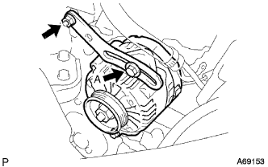

シリンダヘッド ガスケット 取り付け |
| 1. シリンダヘッドセット ボルト点検 |
 |
ノギスを使用して、ヘツドボルトの首下長さを点検する。
| 2. シリンダヘッド ガスケット取り付け |
 |
ロットナンバーが上になるようにヘツドガスケツトをシリンダブロツクに取り付ける。
| 3. シリンダ ヘッドSUB-ASSY取り付け |
シリンダヘツドボルトのねじ部と座面に少量のエンジンオイルを塗布する。
 |
ダブルヘキサゴンレンチ8を使用して、図の順序でシリンダへツドボルトを数回に分けて仮締めした後、規定トルクで締め付ける。
 |
シリンダへツドボルト頭部のエンジンフロント側にペイントマークをつける。
ペイントマークを目安にして、締め付け順序に従いシリンダへツドボルトを90°締め付ける。さらに、締め付け順序に従い90°増し締めする。
全てのペイントマークが180°締め付けられた位置にあることを確認する。
シリンダへツドボルト締め付け後、図の箇所にシールパッキンブラック(直径3.5-4.5ｍｍ)を塗布する。
| 4. カムシャフト取り付け |
カムシヤフトカム部およびシリンダヘツドジヤーナル部にエンジンオイルを塗布する。
カムシヤフトタイミングギヤのタイミングマークを上側にして、カムシヤフトおよびカムシヤフトNo.2をシリンダヘツドにセットする。
 |
カムシヤフトベアリングキヤツプNo.2のフロントマークおよび数字を確認し、図の順序で数回に分けて均等に締め付ける。
カムシヤフトベアリングキヤツプNo.1を取り付ける。
| 5. エンジン ワイヤ接続 |
| 6. ウォータバイパス パイプ NO.1取り付け |
新品のガスケツトを介し、ボルト2本およびナット2個でシリンダヘツドにウオータバイパスパイプNo.1を取り付ける。
| 7. ヒータウォータ ホース アウトレット A接続 |
ラジエータヒータユニツトにヒータ ウオータアウトレツトホースAを接続する。
| 8. ヒータウォータ ホース インレット A接続 |
ラジエータヒータユニツトにヒータ ウオータインレツトホースAを接続する。
| 9. フューエル チューブSUB-ASSY接続 |
フユーエルチユーブを接続する。
| 10. ウォータ フィラSUB-ASSY取り付け |
 |
ボルト2本で、ウオータフイラを取り付ける。
ラジエータホースNo.3およびラジエータリザーブタンクホースを接続する。
| 11. ラジエータ インレット ホース接続 |
クリップでラジエータインレツトホースをラジエータASSYに取り付ける。
| 12. ラジエータ アウトレットホース接続 |
クリップでラジエータアウトレツトホースをラジエータASSYに取り付ける。
| 13. ユニオン トゥー コネクタチューブ ホース接続 |
| 14. オイルレベルゲージ ガイド取り付け |
新品のOリングにエンジンオイルを塗布し、オイルレベルゲージガイドに取り付ける。
ボルトでオイルレベルゲージガイドを取り付ける。
オイルレベルゲージをオイルレベルゲージガイドに差し込む。
| 15. インテーク マニホルド取り付け |
新品のガスケットをインテークマニホールドに取り付ける。
 |
図の順序でインテークマニホルドを仮締めした後、規定トルクで締め付ける。
インテークマニホールドにワイヤハーネスを接続する。
ボルト2本で、ブレーキブースタ用バキュームチューブを取り付ける。
| 16. スロットル ボデーASSY取り付け |
新品のガスケットをインテークマニホールドに取り付ける。
ボルトおよびナット2個で､スロツトルボデーおよびアクセルレータコントロールケーブルブラケツトを取り付ける。
スロツトルポジシヨンセンサおよびアイドルスピードコントロールバルブのコネクタを接続する。
| 17. ウォータバイパス ホース NO.2接続 |
| 18. ウォータバイパス ホース接続 |
| 19. アクセルレータ コントロールケーブルASSY接続 |
| 20. エア クリーナASSY取り付け |
ボルト4本でエアクリーナケースとエアクリーナインレットNo.1を取り付ける。
エアクリーナフィルタエレメントを取り付ける。
エアクリーナキャップとエアクリーナホースASSYを取り付ける。
| 21. マニホルドサポート ブラケット取り付け |
ボルト3本で、マニホルドサポートブラケツトを取り付ける。
| 22. オキシジェン センサ取り付け |
 |
SSTを使用して、オキシジエンセンサを取り付ける。
コネクタを接続する。
| 23. エキゾーストマニホルドヒート インシュレータ NO.1取り付け |
ボルト４本で、エキゾーストマニホルドヒートインシユレータNo.1を取り付ける。
| 24. エキゾーストパイプASSY FR接続 |
| 25. チェーンSUB-ASSY取り付け |
図の位置のマークプレート(黄色)とタイミングマークを合わせて、チェーンを取り付ける。
マークプレートとタイミングマークがはずれないように、クランクシャフトタイミングスプロケット付近でチェーンをひもで縛る。
| 26. チェーン テンショナASSY NO.1取り付け |
 |
ロックが解除された状態でプランジャを奥まで押し込む。
 |
プランジャが奥まで押し込まれた状態からストッパプレートを下にさげ、プランジャをロックする。
 |
プランジャがロックされた状態からストッパプレートの穴にφ3mmの棒または六角棒レンチを差し込む。
ボルト2本でチェーンテンショナASSY No.1を取り付ける。
| 27. チェーンバイブレーション ダンパ NO.1取り付け |
ボルト2本でチェーンバイブレーションダンパNo.1を取り付ける。
| 28. チェーンテンショナ スリッパ取り付け |
ボルトでチェーンテンショナスリッパを取り付ける。
チェーンテンショナASSY No.1のストッパプレートから六角棒レンチを抜き取る。
ひもを取りはずす。
| 29. オイルポンプ シール取り付け |
SSTを使用して、新品のオイルシールをオイルポンプの端面まで均等に打ち込む。
 |
オイルシールのリップ部に少量のMPグリースNo.2を塗布する。
| 30. オイル ポンプASSY取り付け |
 |
図の箇所に新品のOリングを取り付ける。
エンジン本体側およびオイルポンプにシールパッキンを塗布する。
 |
オイルポンプのドライブロータスプライン部をクランクシャフトの2面幅部に合わせ、オイルポンプASSYをクランクシャフトに挿入する。
 |
ボルト15本およびナットで、オイルポンプASSYを取り付ける。
| 31. エンジンウォータポンプASSY取り付け |
 |
新品のガスケットを介して、ボルト３本およびナット２個でウォータポンプを取り付ける。
| 32. ウォータポンプ プーリ取り付け |
ＳＳＴを使用して、ウォータポンププーリを固定する。
ボルト３本を締め付ける。
| 33. エンジンマウンティング ブラケット RH取り付け |
ジヤツキを操作して、エンジンマウンテイングブラケツトRHが取り付けられる位置にする。
 |
ボルト4本で、エンジンマウンテイングブラケツトRHを取り付ける。
| 34. エンジンマウンティング インシュレータSUB-ASSY RH取り付け |
 |
ジヤツキを操作して、ボルト５本およびナットで、エンジンマウンテイングインシユレータRHを取り付ける。
| 35. カムシャフトタイミングオイルコントロール バルブASSY取り付け |
ボルトで、カムシヤフトタイミングオイルコントロールバルブを取り付ける。
| 36. クランクポジション センサ取り付け |
Oリングに少量のエンジンオイルを塗布する。
 |
ボルトでクランクポジシヨンセンサを取り付ける。
コネクタを接続する。
| 37. クランクシャフト ダンパSUB-ASSY取り付け |
クランクシヤフトダンパのストレートピン穴とクランクシヤフトストレートピンを合わせ、クランクシヤフトダンパを取り付ける。
 |
SSTを使用してクランクシヤフトダンパを固定し、ボルトを締め付ける。
| 38. シリンダヘッド カバーSUB-ASSY取り付け |
 |
図の位置にシールパツキンブラツクを塗布し、シリンダヘツドカバーを取り付ける。
 |
ボルト9本およびナット2個で、シリンダヘツドカバーを取り付ける。
図の順序で数回に分けてボルトおよびナットを締め付ける。
| 39. ベンチレーション ホース NO.2取り付け |
| 40. ベンチレーション ホース取り付け |
| 41. イグニッション コイル NO.1取り付け |
ボルトでイグニッションコイルを取り付ける。
コネクタを接続する。
| 42. シリンダヘッド カバー NO.2取り付け |
 |
ナットA2個を締め付け後、ナットB2個でシリンダヘツドカバーNo.2を取り付ける。
| 43. オルタネータASSY取り付け |
 |
固定用ボルトBでオルタネータを仮付けする。
|  |
ボルトAおよびナットでファンベルトアジャスティングバーを仮付け後、オルタネータをシリンダブロック側に寄せてナットを本締めする。
コネクタおよびワイヤハーネスクランプを取り付ける。
ナットで+B端子ターミナルを取り付ける。
ターミナルキャップを取り付ける。
| 44. ベーンポンプVベルト(パワステベルト)取り付け |
Vベルトを各プーリに仮付けする。
| 45. ベーンポンプVベルト(パワステベルト)調整 |
 |
Vベルトの張力を調整し、調整用ボルトBを締付ける。
固定用ボルトAを締付ける。
| 46. ファン ＆ オルタネータ Vベルト取り付け |
Vベルトを各プーリに仮付けする。
| 47. ファン ＆ オルタネータ Vベルト調整 |
 |
ハブナットレンチまたはバーなどを使用して、オルタネータを車両フロント側に引いて、フアン & オルタネータVベルトの張力を調整する。
 |
調整用ボルトAを締め付けてから、固定用ボルトBを締め付ける。
| 48. Vベルト張力·たわみ量 |
 |
張力およびたわみ量点検
| 新品取り付け時 [ｍｍ] | 点検時 [ｍｍ] | |
|---|---|---|
| Vベルト | 8.0-9.0 | 12.5-13.5 |
| P/Sベルト | 8-10 | 11-13 |
| 新品取り付け時 [N{ｋｇｆ} ] | 点検時 [N{ｋｇｆ} ] | |
|---|---|---|
| Vベルト | 700-800 {71-82} | 300-400 {31-41} |
| P/Sベルト | 441-539 {45-55} | 245-343 {25-35} |
| 49. フロントタイヤRH取り付け |
| 50. バッテリマイナスターミナル接続 |
| 51. 冷却液(トヨタ純正スーパーLLC)補充 |
ラジエータドレーンコツクプラグを閉じて、冷却水をラジエータ注入口よりあふれるまで注入する。［＊１］
ラジエータキヤツプを締める。
ラジエータリザーブタンクに冷却液を上限まで注入する。
エンジンをサーモスタツトが開弁するまで暖機する。
エンジンを止め、冷却液が冷えるまで待ち、ラジエータキヤツプをはずして水位を確認する。
水位が下がっている場合は、［＊１］より繰り返す。
水位が下がらなくなったら、ラジエータリザーバタンクの冷却液を調整する。
| 52. 冷却液(トヨタ純正スーパーLLC)漏れ点検 |
冷却液を満水にしてテスターを取り付ける。
137ｋＰａ｛1.4ｋｇｆ/ｃｍ２｝の圧力をかけ、各部に水漏れがないことを確認する。
| 53. エンジンオイル補充 |
| 54. エンジンオイル漏れ点検 |
| 55. 燃料漏れ点検 |
| 56. エンジンアンダ カバー RH取り付け |
スクリュー2個およびボルト2本で、エンジンアンダーカバーRHを取り付ける。
ナットを、締め付ける。